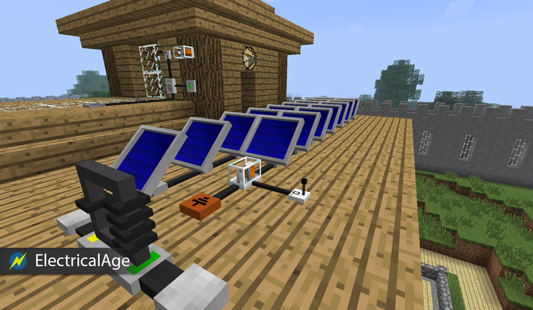

ELN is a Minecraft Mod offering the ability to perform large-scale in-game electrical simulations.

- A better simulation
- Electrical simulation with resistive and capacitive effects. Behaviour similar to those of real life objects.
- Multiple electrical sources
- Furnaces, Solar panels, Wind turbines, Batteries, Capacitors, ...
- Break the cube
- Cables, sensors, actuators, alarms, etc. can be placed on each face (outer and inner) of a cube, witch allows a significant reduction of the consumed space by electrical installations.
- Night-lighting revisited
- Lamps, switches, captors, ...
- Small and big electricals consumers
- From the lamps, electrical furnaces,... to the miners, transporters, ...
- Incredible tools
- XRay scanner, flashlight, portable mining drill, ...
- Genericity
- Old redstones circuits can be exploited with electrical - redstones converters.
- Game lifetime/complexity extended
- A consequent list of new raw materials and items...
- Official forum post is here (updated frequently)